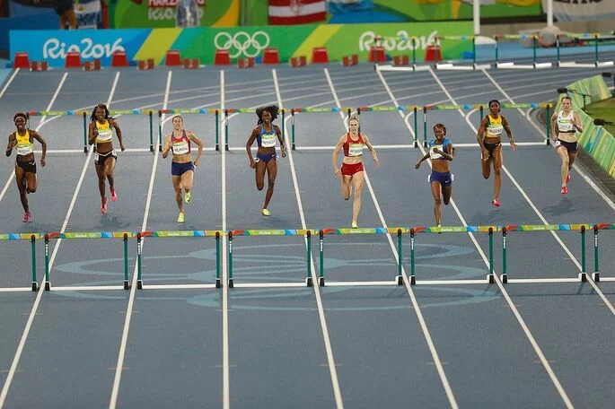

Disputado nos primeiros Jogos Olímpicos da antiguidade, o atletismo é um dos esportes mais antigos já registrados, com os nomes dos campeões documentados desde 776 a.C. Os Jogos Olímpicos da antiguidade incluíam provas como corridas e um pentatlo que consistia em corrida, salto em distância, lançamento de disco, lançamento de dardo e luta...
O atletismo moderno é composto por diversas corridas, saltos, arremessos, marchas e provas combinadas. Devido a sua diversidade de categorias e disciplinas, o atletismo é o esporte que envolve o maior número de participantes nos Jogos Olímpicos...
Corridas: rasas, com barreiras, com obstáculos.
